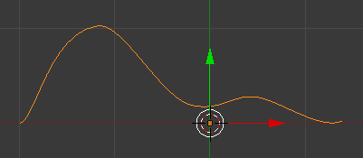
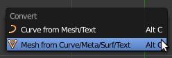
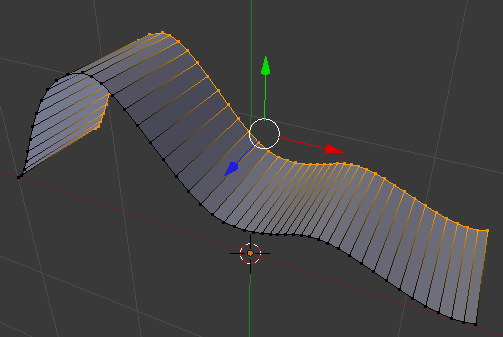
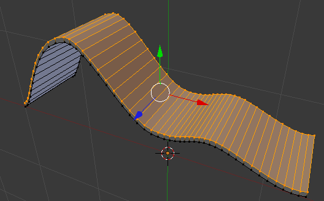
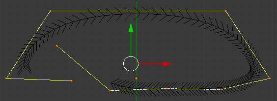
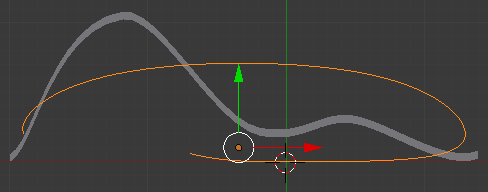
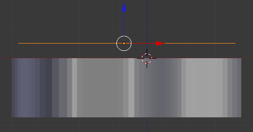
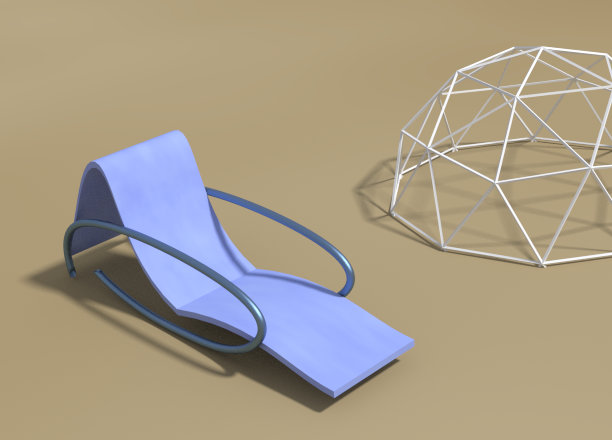

Modelação de uma cadeira de praia com linhas
1- Apague o cubo inicial. Adicione uma curva Bezier.
2- Comece por seleccionar a curva e subdividi-la (2x). Depois, utilizando as alças de controle e o Grab, Rotate e Scale, molde uma curva com forma semelhante à da imagem abaixo. Em Edit Mode, pode utilizar o atalho V para escolher modo de controlo dos pontos (livre, alinhado, vector, etc).
3- Converta a linha para malha (Mesh). Em Object Mode, seleccione a linha e utilize o atalho ALT+C. Depois, transformada a linha em malha, pode utilizar as ferramentas habituais de modelação de malha (i.e. extrusão, etc.).
4- Aplique uma extrusão para obter uma forma semelhante à abaixo exibida.
5- Aplique uma nova extrusão para aumentar a espessura do objecto. Se preferir, pode utilizar o modifier Solidify para criar espessura. Pode ainda utilizar shading Smooth combinado com o modifier Edge Split para suavizar/arredondar as faces mas preservar alguns ângulos mais proeminentes.
6- Em Object Mode, adicione uma NURBS Curve. Seleccione uma das extremidades (um dos pontos) e adicione novos segmentos (clique com o BER enquanto tem o CTRL pressionado). Manipule até obter uma forma semelhante à apresentada abaixo.
7- Posicione a curva NURBS ao lado do objecto anterior. Verifique a dimensão e altere se necessário.
 8- Adicione um Bezier Circle, redimensione-o e modifique o seu posicionamento de forma semelhante à apresentada abaixo. Repare que a Bezier Circle está posicionada perto de um dos vértices (extremidades) da curva NURBS.

Veja qual é o nome do objecto Bezier Circle adicionado. Provavelmente é CurveCircle.
Seleccione a NURBS Curve e na caixa Bevel Object digite o nome da Bezier Circle ou clique na caixa e escolha.
9- Deverá ter obtido um tubo que vamos utilizar como braço da cadeira. Modifique a dimensão do braço ou do círculo a seu gosto.
Quando estiver satisfeito, seleccione o braço da cadeira, converta-o para malha (ALT+C). Edite novamente o braço a seu gosto. Crie um duplicado e posicione-o do outro lado.
